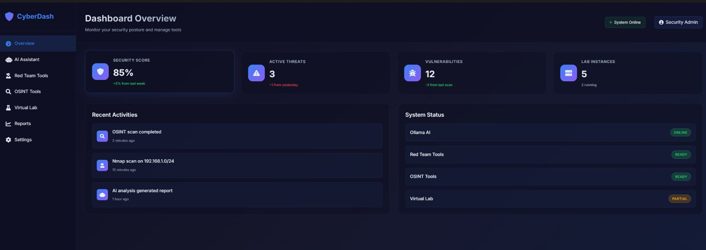

SEGURANÇA · PYTHON · DOCKER · IA LOCAL
CyberDash
Um dashboard de segurança modular que reúne IA local, ferramentas de rede e segurança, utilitários OSINT e gestão de contentores numa única interface web — construído como exercício de arquitetura e integração.
RESULTADO
Várias ferramentas de segurança, OSINT e laboratório numa única interface, com um assistente de IA local.

01 O PROBLEMA
O trabalho de segurança espalha-se por dezenas de ferramentas de linha de comandos soltas, cada uma com o seu output. Queria um sítio que juntasse scanners, OSINT e um laboratório de treino isolado — e ao mesmo tempo um exercício de arquitetura e integração.
02 O QUE FAZ
- Uma interface web
- Scanners, ferramentas OSINT e gestão do laboratório num dashboard modular, em vez de terminais soltos.
- Assistente de IA local
- Um modelo de linguagem local como assistente na interface, para que nenhum dado vá para a cloud.
- Wrappers de ferramentas
- Wrappers limpos à volta de ferramentas de segurança conhecidas, com os resultados bem apresentados na interface.
- Módulo OSINT
- Ferramentas de open-source intelligence reunidas num só lugar.
- Laboratório de treino isolado
- Um laboratório baseado em contentores para experimentar de forma segura e isolada.
03 O QUE APRENDI
O desafio não estava nas ferramentas soltas, mas na arquitetura à volta delas: ligar módulos de forma limpa, mostrar o output de forma uniforme e manter tudo seguro e isolado. Publicamente mostro isto como trabalho de integração e design, não como ferramentas de segurança em produção.
INTERESSADO?
Vamos conversar.
Diga-me o que acha — ou o que gostaria de fazer com isto.